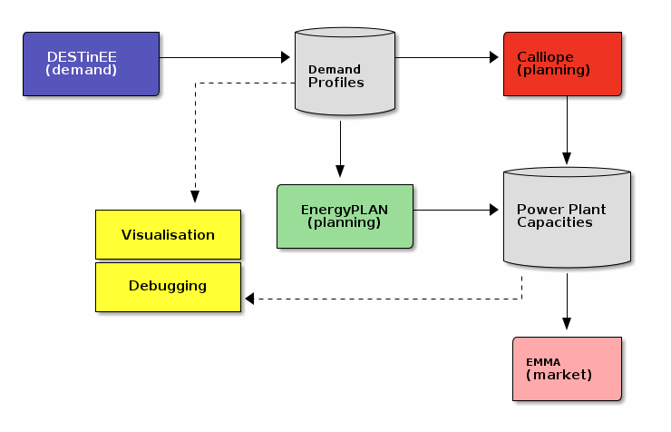

Our objective is to develop a standard through which models in the SENTINEL ecosystem can interact easily. To that goal, out approach is to build a framework that facilitates the flow of data between models in a way that can be automated. This is challenging because different models use different data formats, unit conventions, or variable naming schemes, etc.
{kind=link}

An open ecosystem enabled by the data format, where different modelling frameworks can be interlinked, and a suit of independent software tools to work with data can be developed.¶
To address this, we are developing a flexible data standard that can
be the common medium of exchange between different models, allowing
for sharing of results and linking. The friendly_data package,
implements this framework. It provides a Command Line Interface to
create and manage data packages that can be easily exchanged between
different modelling teams in SENTINEL. It also provides a Python API
to do the same operations and more from within a computer program. As
the Python language has a very rich ecosystem of tools for data
analysis and visualisation, this opens the the door to a very powerful
analysis environment for collaborative research. This framework is
available as open source software under the version 2 of the Apache
software license.